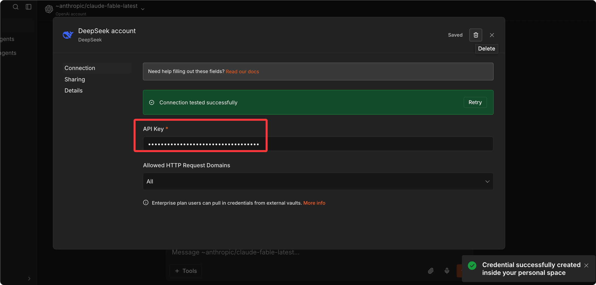

n8n 入门教程
n8n（读作 "n-eight-n"，意为 "nodemation"）是目前最受技术团队青睐的开源工作流自动化平台。
n8n 的核心优势是：可视化画布 + 原生代码支持 + 完全自托管——既能让非开发者拖拽搭建，又能让开发者在任意节点写 JavaScript 或 Python，而且可以运行在你自己的服务器上，数据在本地。
n8n 是一个工作流自动化平台，让你能够将 AI 安全可控地集成到工作和流程中。
n8n 把可视化构建体验与代码能力结合在一起——可以在工作流的任意地方写 JavaScript 或 Python，在每个步骤的输入输出旁边即时查看结果。

Dify 与 n8n 的区别
和 Dify 不同，n8n 的核心是通用自动化和系统集成，AI 是其中一个强大的组件，而 Dify 的核心是 AI 应用开发，自动化是辅助能力。
简单说：
- 需要把多个 SaaS 系统连接起来、数据在系统间流转：n8n 是更好的选择
- 需要搭建一个以 AI 对话为核心的应用（客服机器人、RAG 问答）：Dify 是更好的选择
适合谁用
n8n 的视觉界面让非开发者可以快速设计和测试工作流，随着复杂度增加，开发者可以用 Function 节点、外部脚本或自定义集成来扩展。
这让团队可以增量式地叠加结构、验证和控制。
最典型的用户群：
| 用户群 | 典型场景 |
|---|---|
| 运营团队 | 自动化 CRM 更新、报表生成、邮件发送 |
| 开发者 | API 集成、数据管道、内部工具自动化 |
| 数据工程师 | ETL 流水线、数据清洗、定时同步 |
| IT 团队 | 监控告警、事件响应、用户管理 |
| 技术创业公司 | 快速构建 MVP 的后端自动化层 |
核心概念
在开始学习前，我们先理解这几个核心概念。
工作流（Workflow）
一个工作流是一系列节点的有向图，定义了「当 X 发生时，执行 Y，然后执行 Z」的逻辑。
工作流有两种状态：激活（Active）时响应触发器自动运行，非激活（Inactive）时只能手动执行用于测试。
节点（Node）
工作流的基本构建块，每个节点执行一个具体操作：
| 节点类型 | 颜色 | 说明 |
|---|---|---|
| 触发器节点 | 橙色 | 工作流的起点，定义何时触发 |
| 常规节点 | 蓝色 | 处理数据、调用 API、执行逻辑 |
| AI 相关节点 | 紫色 | LLM 调用、向量存储、Agent |
执行（Execution）
工作流的一次完整运行叫做一次执行。
n8n 的执行计费方式是：一次执行 = 工作流跑一遍，无论里面有多少个步骤或处理多少数据。
连接（Connection）
节点之间的箭头，定义数据流向和执行顺序。一个节点可以有多个输出，实现分支逻辑。
凭证（Credential）
存储 API Key、OAuth Token、数据库密码等敏感信息的安全容器。
凭证加密存储，可以被多个工作流共用，不会在工作流 JSON 里明文暴露。
表达式（Expression）
n8n 的动态值语法，用双花括号包裹：{{ $json.fieldName }}。
让节点参数可以引用上游节点的输出，而不是固定值。
安装与启动
五种安装方式，从本地快速体验到企业级高可用部署。
方式一：本地快速体验（最快，5 分钟）
使用 npx 或全局安装，无需额外配置。
# 使用 npx，无需安装（需要 Node.js 18+） npx n8n # 或全局安装 npm install -g n8n n8n start
打开浏览器访问 http://localhost:5678，完成账号注册即可使用。

如果忘记邮箱密码，使用 npx n8n user-management:reset 命令来重置。
方式二：Docker 单容器（推荐个人和小团队）
一条命令启动，数据持久化到本地目录。
# 创建数据持久化目录 mkdir -p ~/.n8n # 启动 n8n 容器 docker run -d \ --name n8n \ -p 5678:5678 \ -v ~/.n8n:/home/node/.n8n \ -e N8N_ENCRYPTION_KEY="your-random-32-char-secret-key" \ docker.n8n.io/n8nio/n8n:latest
访问 http://localhost:5678 完成设置。
方式三：Docker Compose + PostgreSQL（推荐生产环境）
适合生产环境，数据存储在 PostgreSQL，支持更稳定的并发访问。
创建 docker-compose.yml：
version: "3.8"
services:
postgres:
image: postgres:16-alpine
restart: always
environment:
POSTGRES_DB: n8n
POSTGRES_USER: n8n
POSTGRES_PASSWORD: ${POSTGRES_PASSWORD}
volumes:
- postgres_data:/var/lib/postgresql/data
healthcheck:
test: ["CMD-SHELL", "pg_isready -U n8n"]
interval: 10s
timeout: 5s
retries: 5
n8n:
image: docker.n8n.io/n8nio/n8n:latest
restart: always
ports:
- "5678:5678"
environment:
# 数据库连接配置
DB_TYPE: postgresdb
DB_POSTGRESDB_HOST: postgres
DB_POSTGRESDB_DATABASE: n8n
DB_POSTGRESDB_USER: n8n
DB_POSTGRESDB_PASSWORD: ${POSTGRES_PASSWORD}
# 安全配置
N8N_ENCRYPTION_KEY: ${N8N_ENCRYPTION_KEY}
N8N_SECURE_COOKIE: "false" # 如果没有 HTTPS，设为 false
# 访问地址（替换为你的实际域名）
WEBHOOK_URL: https://your-domain.com
N8N_EDITOR_BASE_URL: https://your-domain.com
# 时区设置
GENERIC_TIMEZONE: Asia/Shanghai
TZ: Asia/Shanghai
volumes:
- n8n_data:/home/node/.n8n
depends_on:
postgres:
condition: service_healthy
volumes:
postgres_data:
n8n_data:
创建 .env 文件：
POSTGRES_PASSWORD=your-strong-postgres-password N8N_ENCRYPTION_KEY=your-32-char-random-encryption-key
生成安全的加密密钥：
# 生成 24 字节的 base64 随机密钥 openssl rand -base64 24
启动服务：
# 后台启动所有服务 docker compose up -d # 查看日志，等待启动完成 docker compose logs -f n8n
方式四：配置反向代理（Nginx + HTTPS）
生产部署建议配置 Nginx，方便绑定域名和 HTTPS。
server {
listen 80;
server_name n8n.yourdomain.com;
return 301 https://$host$request_uri;
}
server {
listen 443 ssl;
server_name n8n.yourdomain.com;
# SSL 证书路径（使用 Let's Encrypt 自动签发）
ssl_certificate /etc/letsencrypt/live/n8n.yourdomain.com/fullchain.pem;
ssl_certificate_key /etc/letsencrypt/live/n8n.yourdomain.com/privkey.pem;
# n8n WebSocket 支持
location / {
proxy_pass http://localhost:5678;
proxy_http_version 1.1;
proxy_set_header Upgrade $http_upgrade;
proxy_set_header Connection "upgrade";
proxy_set_header Host $host;
proxy_set_header X-Real-IP $remote_addr;
proxy_read_timeout 300s;
proxy_send_timeout 300s;
}
# MCP SSE 端点专项配置
location ~* ^/mcp {
proxy_pass http://localhost:5678;
proxy_buffering off;
gzip off;
chunked_transfer_encoding off;
proxy_set_header Connection "";
}
}
申请 SSL 证书（Let's Encrypt）：
# 自动配置 Nginx 并申请 SSL 证书 certbot --nginx -d n8n.yourdomain.com
方式五：Kubernetes（高可用，企业级）
对于需要高可用的团队，使用官方 Helm Chart。
# 添加 n8n Helm 仓库 helm repo add n8n https://n8n-helm-chart.netlify.app # 安装 n8n，启用 PostgreSQL 和 Redis helm install n8n n8n/n8n \ --set n8n.encryption_key="your-key" \ --set postgresql.enabled=true \ --set redis.enabled=true # 队列模式需要 Redis
高可用架构需要配置「队列模式」（Queue Mode），使用 Redis 作为消息队列，允许多个 Worker 节点并行处理任务。
系统要求
不同使用场景的硬件推荐：
| 场景 | CPU | 内存 | 磁盘 |
|---|---|---|---|
| 开发测试 | 1 核 | 1 GB | 10 GB |
| 小团队生产 | 2 核 | 4 GB | 20 GB |
| 中等负载 | 4 核 | 8 GB | 50 GB |
数据库建议：n8n 默认使用 SQLite，但生产环境强烈推荐 PostgreSQL。PostgreSQL 性能更好，支持并发访问，更易备份。
界面导览：第一次打开 n8n
了解 n8n 的主要界面区域，快速上手操作。

左侧导航栏
| 图标/区域 | 功能 |
|---|---|
| 工作流列表 | 查看、搜索、创建工作流 |
| 执行历史 | 查看所有工作流的运行记录 |
| 凭证 | 管理 API Key、OAuth 等敏感信息 |
| 变量 | 全局变量（Team/Business 功能） |
| 设置 | 实例配置、用户管理 |
我们可以配置 API 可以，比如 DeepSeek，点击 New Chat 菜单，点击左上角的模型，在下拉列表选择 DeepSeek：

然后配置 API key：

配置成功后，点击左上角的模型，在下拉列表选择 DeepSeek 的模型：

就可以开始聊天了：

工作流画布
画布操作快捷键：
| 操作 | 快捷键/方式 |
|---|---|
| 添加节点 | 点击 + 按钮，在两个节点之间添加 |
| 搜索节点 | Ctrl+K 快速搜索和添加 |
| 平移画布 | 拖拽空白区域 |
| 缩放画布 | 鼠标滚轮 |
| 全选节点 | Ctrl+A |
| 删除节点 | Delete 键删除选中节点 |
节点面板
点击任意节点打开配置面板，分为三个标签页：
| 标签页 | 功能 |
|---|---|
| Parameters（参数） | 节点的主要配置 |
| Settings（设置） | 执行控制（重试、超时、错误处理） |
| Notes（备注） | 给节点添加说明文字 |
顶部工具栏
| 按钮 | 功能 |
|---|---|
| Execute Workflow（运行） | 手动触发一次执行 |
| Save（保存） | 保存当前编辑 |
| Active 开关 | 激活/停用工作流 |
构建第一个工作流
通过一个完整示例上手：每天早上 8 点自动抓取 Hacker News 热门文章，格式化后发送到 Slack 频道。
步骤一：创建工作流
左侧选择 Workflows，点击 New Workflow（新建工作流），重命名为「HN 早报」。
步骤二：添加定时触发器
点击 + 按钮，搜索「Schedule」，选择 Schedule Trigger。
配置说明：
Trigger Rule：0 8 * * 1-5（周一到周五早上 8 点） 或使用界面选择器：Hour → 8，Weekday → Mon to Fri
步骤三：抓取 HN 数据
在 Schedule Trigger 右侧点击 +，搜索「HTTP Request」，添加节点。
配置：
Method：GET URL：https://hacker-news.firebaseio.com/v0/topstories.json
这会返回当前热门文章的 ID 数组（最多 500 个）。
步骤四：限制取前 5 条
添加 Code 节点，写 JavaScript：
实例
const topIds = $input.first().json.slice(0, 5);
return topIds.map(id => ({ json: { id } }));
步骤五：并行获取每条文章详情
添加 HTTP Request 节点。
n8n 会对上游的每一条数据自动并行执行，无需手动写循环。
配置：
URL：https://hacker-news.firebaseio.com/v0/item/{{ $json.id }}.json
步骤六：格式化消息
添加 Code 节点：
实例
// 遍历所有文章，格式化为 Slack 消息格式
const formatted = items.map(item => {
const { title, url, score, by } = item.json;
return `• *${title}*\n 分数: ${score} | 作者: ${by}\n ${url || '(无链接)'}`;
}).join('\n\n');
// 返回组装好的消息
return [{ json: { message: `*Hacker News 今日热门*\n\n${formatted}` } }];
步骤七：发送到 Slack
添加 Slack 节点（先完成 Slack 凭证配置，见凭证管理章节）。
配置：
Resource：Message
Operation：Send
Channel：#general（或你的目标频道）
Message：{{ $json.message }}
步骤八：测试运行
点击顶部 Execute Workflow 按钮，观察每个节点旁边出现的数字（表示处理的数据条数）。
点击任意节点可以查看其输入和输出数据。
步骤九：激活工作流
测试通过后，点击右上角 Active 开关，工作流进入激活状态，会在每个工作日早上 8 点自动执行。
常用节点详解
掌握最常用的节点类型，覆盖触发器、数据处理和数据库三大类。
触发器类节点
触发器是工作流的起点，定义何时启动执行。
| 节点 | 触发方式 | 典型场景 |
|---|---|---|
| Schedule Trigger | 定时（cron 表达式） | 每日报表、定时同步 |
| Webhook | HTTP 请求触发 | 接收 Stripe/GitHub 事件 |
| Chat Trigger | AI 对话消息 | 驱动 AI Agent 工作流 |
| Email Trigger (IMAP) | 新邮件到达 | 处理邮件请求 |
| Slack Trigger | Slack 事件 | 响应 Slash 命令 |
数据处理节点
HTTP Request（最核心的节点）
几乎可以调用任何 REST API：
Method: POST
URL: https://api.example.com/endpoint
Authentication: Header Auth（配合凭证使用）
Body Content Type: JSON
Body: {
"key": "{{ $json.value }}"
}
支持自动分页（Pagination），无需写循环逻辑就能获取全部数据。
Code（JavaScript / Python）
JavaScript 示例：
实例
for (const item of $input.all()) {
// 为每条数据添加处理时间戳
item.json.processedAt = new Date().toISOString();
}
return $input.all();
Python 示例：
实例
for item in _input.all():
item.json["processed"] = True
return _input.all()
Set（设置变量）
可视化地设置、修改、删除字段，无需写代码。
字段名: fullName
值: {{ $json.firstName + " " + $json.lastName }}
IF（条件分支）
根据条件将数据路由到不同的分支：
条件: {{ $json.status }} == "active"
True 分支 → 处理活跃用户
False 分支 → 处理非活跃用户
Switch（多路分支）
类似 IF，但支持多个条件（类似 switch-case），将数据分发到不同处理路径。
Loop Over Items（循环）
对数组中的每个元素逐一处理，适合需要控制速率而非并行处理的场景。
Merge（合并）
将多个分支的数据合并在一起，支持 Append、Keep Key Matches、Combine By Position 等策略。
Wait（等待/Human-in-the-Loop）
暂停工作流执行，等待以下条件满足后才继续：
- 一段时间后自动继续
- 收到 Webhook 回调后继续（Human-in-the-Loop 的核心）
- 特定表单提交后继续
Respond to Webhook（响应 Webhook）
在接收 Webhook 的工作流中，向请求方同步返回响应。
数据库节点
| 节点 | 支持操作 |
|---|---|
| PostgreSQL | Select / Insert / Update / Delete / Execute Query |
| MySQL | Select / Insert / Update / Delete / Execute Query |
| MongoDB | Find / Insert / Update / Delete / Aggregate |
| Redis | Get / Set / Delete / Incr / Expire |
| Supabase | 通过 REST 或 PostgreSQL 节点 |
凭证管理：安全连接外部服务
凭证是 n8n 里管理所有认证信息的统一机制，所有凭证都用 N8N_ENCRYPTION_KEY 加密存储在数据库中。
团队可以共享凭证而无法看到实际密钥内容。
添加凭证
两种方式添加凭证：
- 左侧导航选择 Credentials（凭证），点击 Add Credential（添加凭证）
- 在节点配置中点击凭证下拉框，选择 Create new credential（创建新凭证）
常见凭证配置
Slack（OAuth）
- 访问 api.slack.com/apps 创建 App
- 开启 Bot Token Scopes（chat:write、channels:read）
- 安装 App 到工作区，复制 Bot Token（以 xoxb- 开头）
- 在 n8n 中选择 Slack，粘贴 Bot Token
GitHub（Personal Access Token）
- GitHub 中选择 Settings，进入 Developer settings，选择 Personal access tokens，点击 Generate new token
- 选择需要的权限（repo、issues 等）
- 复制 Token，在 n8n 中添加 GitHub 凭证
OpenAI / Anthropic（API Key）
- 从各提供商控制台获取 API Key
- 在 n8n 中选择 Credentials，搜索 "OpenAI" 或 "Anthropic"，粘贴 Key
通用 HTTP Header（任意 API）
对于 n8n 没有专门节点的服务，用 HTTP Request 节点配合 Header Auth 凭证：
Header Name: Authorization Header Value: Bearer your-api-key-here
AI Agent 节点：让工作流会思考
n8n 原生 AI Agent 节点让你可以构建智能的自主工作流，使用大型语言模型进行决策、处理自然语言，并执行多步骤推理。
AI Agent 节点的组成
AI Agent 节点是一个「集群节点」，由三类子节点组成：
AI Agent（根节点）
├── Chat Model（必需）：驱动 Agent 的 LLM
│ ├── OpenAI Chat Model
│ ├── Anthropic Chat Model
│ └── Google Gemini Chat Model
├── Memory（可选）：让 Agent 记住对话历史
│ ├── Simple Memory（会话内记忆）
│ ├── Window Buffer Memory（固定窗口）
│ └── Postgres/Redis Chat Memory（跨会话持久化）
└── Tools（可选）：Agent 可以调用的工具
├── 内置工具（Calculator、SerpAPI、Wikipedia）
├── HTTP Request Tool（调用任意 API）
├── n8n Workflow Tool（调用另一个工作流）
└── MCP Client Tool（调用 MCP 服务器）
配置 AI Agent
第一步：添加 AI Agent 节点。
在工作流画布搜索 AI Agent，选择 Tools Agent（最通用的 Agent 类型）。
第二步：添加 Chat Model。
点击 AI Agent 节点底部的 Chat Model 插槽，添加 Anthropic Chat Model。
配置：
Model：claude-sonnet-4-6 凭证：选择已配置的 Anthropic 凭证
第三步：配置 System Prompt。
你是一个数据分析助手，帮助用户分析 {{ $json.company_name }} 公司的销售数据。
可用工具：
- 查询数据库获取历史销售数据
- 搜索互联网获取市场信息
- 计算器用于数学运算
回答要简洁、数据驱动。如果数据不足，明确说明需要哪些额外信息。
第四步：添加工具。
点击 Add Tool，添加需要的工具节点。
每个工具需要配置工具名称（Agent 会用这个名字决定何时调用）和工具描述（告诉 Agent 这个工具能做什么）。
Agent 类型选择
| Agent 类型 | 适合场景 |
|---|---|
| Tools Agent（推荐） | 通用，支持 Function Calling，现代 LLM 最佳选择 |
| ReAct Agent | Reasoning + Acting，适合需要多步推理的任务 |
| Plan and Execute Agent | 先制定完整计划，再逐步执行 |
| Conversational Agent | 对话式，有内置记忆，适合聊天机器人 |
| SQL Agent | 专门处理数据库查询 |
| OpenAI Functions Agent | OpenAI 专属 Function Calling |
MCP 集成：连接 AI 生态
n8n 在 MCP（Model Context Protocol）生态里有双重身份：既可以消费 MCP 服务（作为 MCP 客户端），也可以暴露工作流为 MCP 服务（作为 MCP 服务器）。
n8n 作为 MCP 客户端（调用外部工具）
使用 MCP Client Tool 节点，连接任何 MCP 服务器。
MCP Client Tool 节点支持 Bearer、通用 Header、多 Header 和 OAuth2 认证方式。
配置示例：连接 GitHub MCP 服务器
节点类型：MCP Client Tool SSE Endpoint: https://mcp.github.com/sse # 或自托管的 MCP 服务器地址 Authentication: Bearer Bearer Token: your-github-token Tools to Include: All（暴露所有工具给 Agent）
将 MCP Client Tool 节点连接到 AI Agent 的 Tools 插槽，Agent 就能直接调用 GitHub 的 MCP 工具（列出 Issues、创建 PR、查看代码等）。
n8n 作为 MCP 服务器（暴露工作流）
使用 MCP Server Trigger 节点，可以让 n8n 作为 MCP 服务器，将 n8n 工具和工作流暴露给 MCP 客户端。
它通过暴露一个 URL 来运作，MCP 客户端可以与该 URL 交互以访问 n8n 工具。
搭建步骤：
- 创建新工作流，添加 MCP Server Trigger 节点
- 节点会自动生成测试 URL 和生产 URL（格式：https://your-n8n.com/mcp/xxxxxxxx）
- 在 MCP Server Trigger 旁边连接你想暴露的工具节点
MCP Server Trigger ├── Google Calendar Tool（查看/创建日程） ├── Gmail Tool（读取/发送邮件） ├── Slack Tool（发送消息） └── Custom n8n Workflow Tool（调用其他工作流）
- 发布工作流（点击 Publish）
在 Claude Desktop 中使用：
编辑 ~/Library/Application Support/Claude/claude_desktop_config.json：
实例
"mcpServers": {
"n8n": {
"command": "npx",
"args": [
"-y",
"mcp-remote@latest",
"https://your-n8n.com/mcp/your-mcp-path",
"--header",
"Authorization:Bearer your-bearer-token"
]
}
}
}
实例级 MCP 服务器
2026 年 4 月，n8n 推出了实例级 MCP 服务器。
它让 AI 客户端（Claude Desktop、Cursor 等）能够直接通过自然语言创建、验证、测试和发布整个工作流——它是一个开发工具，而不是运行时工具。
启用方式（自托管）：
N8N_MCP_ACCESS_ENABLED=true
启用后，你的 Claude Desktop 或其他 MCP 客户端可以直接对 n8n 说：「创建一个工作流，每天早上把 GitHub 的 PR 列表发到 Slack」，n8n 会自动构建这个工作流。
场景实战一：GitHub Issue 自动分类与通知
用 AI Agent 自动分类 GitHub Issue，按类型路由到不同的处理人和频道。
业务场景
开源项目每天收到大量 Issue，需要自动分类（Bug / Feature Request / Question / Docs）并通知相关负责人。
工作流设计
Webhook（接收 GitHub Issue 事件） ↓ IF 节点（过滤：只处理新建的 Issue） ↓ AI Agent 节点（分析 Issue 内容，给出分类和优先级） ↓ Switch 节点（根据分类路由） ├── Bug → 添加 "bug" 标签 + 通知 @backend-team ├── Feature → 添加 "enhancement" 标签 + 通知 @product-team ├── Question → 添加 "question" 标签 + 自动生成初步回复 └── Docs → 添加 "documentation" 标签 + 通知 @docs-team ↓ GitHub 节点（添加标签 + 发表评论） ↓ Slack 节点（发送通知到对应频道）
关键节点配置
第一步：配置 GitHub Webhook
在 GitHub 仓库中选择 Settings，进入 Webhooks，点击 Add Webhook：
Payload URL：https://your-n8n.com/webhook/github-issues Content type：application/json Events：Issues（只选 Issues 事件）
在 n8n 添加 Webhook 节点：
HTTP Method：POST Path：github-issues （记录下 Test URL，用于调试）
第二步：过滤新建事件
添加 IF 节点：
条件：{{ $json.action }} == "opened"
只有 action === "opened" 的事件才继续处理，labeled、closed 等事件直接丢弃。
第三步：AI 分类节点
添加 AI Agent 节点，配置 System Prompt：
你是一个 GitHub Issue 分类专家。分析以下 Issue，返回 JSON 格式的分类结果：
{
"category": "bug" | "feature" | "question" | "docs",
"priority": "P0" | "P1" | "P2" | "P3",
"reason": "分类理由（一句话）",
"suggested_reply": "给 Issue 作者的初步回复（仅用于 question 类型）"
}
分类标准：
- bug：描述了一个功能不正常工作的情况
- feature：要求新增功能或改进现有功能
- question：寻求帮助或解释
- docs：关于文档的问题或建议
优先级：
- P0：生产崩溃、安全漏洞
- P1：核心功能损坏
- P2：普通 Bug 或常见需求
- P3：优化建议、文档改善
User 消息配置使用表达式：
Issue 标题：{{ $json.issue.title }}
Issue 内容：{{ $json.issue.body }}
作者：{{ $json.issue.user.login }}
第四步：解析 AI 输出
添加 Code 节点解析 JSON（因为 AI 可能输出带 Markdown 代码块的 JSON）：
const text = $input.first().json.output;
// 去掉可能的 ```json 和 ``` 包裹，提取纯 JSON
const cleaned = text.replace(/```json\n?/g, '').replace(/```\n?/g, '').trim();
const parsed = JSON.parse(cleaned);
return [{ json: parsed }];
第五步：Switch 路由
添加 Switch 节点：
Value 1：{{ $json.category }}
路由规则：
"bug" → Output 1
"feature" → Output 2
"question"→ Output 3
"docs" → Output 4
(默认) → Output 5
第六步：添加标签 + 发表评论
为每个分支添加 GitHub 节点（两个操作）。
GitHub 节点（添加标签）：
Resource：Issue
Operation：Add Labels
Repository Owner：{{ $('Webhook').item.json.repository.owner.login }}
Repository Name：{{ $('Webhook').item.json.repository.name }}
Issue Number：{{ $('Webhook').item.json.issue.number }}
Labels：bug（根据分支不同填不同标签）
GitHub 节点（发表评论，仅 question 分支）：
Resource：Issue
Operation：Create Comment
Body：{{ $('AI Agent').item.json.suggested_reply }}
第七步：Slack 通知
Channel：#bugs（根据分支选择不同频道）
Message：
*新 Issue* 已分类为 `{{ $json.category }}`（优先级 {{ $json.priority }}）
*标题*：{{ $('Webhook').item.json.issue.title }}
*作者*：{{ $('Webhook').item.json.issue.user.login }}
*链接*：{{ $('Webhook').item.json.issue.html_url }}
*分类理由*：{{ $json.reason }}
场景实战二：AI 文档处理流水线（发票/合同提取）
用 AI 自动从邮件附件中提取发票信息，结构化存储到 Google Sheets。
业务场景
最高价值的入门场景是 AI 文档处理工作流。模式是：通过 Webhook 或邮件附件触发接收文档，将文档内容传给 AI 节点，用 JSON 格式指令提取结构化数据，然后将结果写入 Google Sheets、Airtable 或数据库。这个单一工作流可以为小型运营团队每天节省 2-4 小时的人工数据录入。
目标：邮件附件发票 PDF 经过 AI 提取关键字段，写入 Google Sheets 并发送确认。
工作流设计
Email Trigger（监听新邮件，有附件） ↓ IF 节点（过滤：只处理包含发票/invoice 的邮件） ↓ HTTP Request（下载邮件附件） ↓ AI Agent（提取发票信息，返回结构化 JSON） ↓ Google Sheets（追加新行） ↓ Email（发送处理确认邮件给发件人）
关键节点配置
Email Trigger（IMAP）
Protocol：IMAP Host：imap.gmail.com（或你的邮件服务器） User/Password：邮箱账号和专用密码 Mailbox：INBOX Download Attachments：开启
提取发票信息的 Prompt
使用 AI Agent 节点，或直接用 Anthropic Chat Model 节点（更经济）：
System: 你是一个发票数据提取专家。从以下发票文本中提取信息，
返回严格的 JSON 格式，不要任何额外文字：
{
"invoice_number": "发票号",
"invoice_date": "发票日期（YYYY-MM-DD）",
"vendor_name": "供应商名称",
"vendor_tax_id": "供应商税号",
"buyer_name": "购买方名称",
"items": [
{
"description": "商品描述",
"quantity": 数量,
"unit_price": 单价,
"amount": 金额
}
],
"subtotal": 小计,
"tax_rate": 税率,
"tax_amount": 税额,
"total_amount": 总金额,
"currency": "货币（CNY/USD/EUR）",
"due_date": "付款截止日（YYYY-MM-DD，没有则为 null）"
}
User: {{ $json.attachmentText }}
Google Sheets 节点
配置：
Resource：Sheet Within Document Operation：Append Row
映射字段（使用表达式引用 AI 输出）：
发票号：{{ $json.invoice_number }}
日期：{{ $json.invoice_date }}
供应商：{{ $json.vendor_name }}
金额：{{ $json.total_amount }}
货币：{{ $json.currency }}
处理时间：{{ $now.toISOString() }}
场景实战三：多渠道客服路由（含 Human-in-the-Loop）
合并多个渠道的客服工单，AI 分级后自动处理低优先级，高优先级等待人工审批。
业务场景
客服工单从多个渠道涌入（邮件、Slack、表单），需要 AI 初步分析、分级路由，复杂工单需要人工审批后再回复。
工作流设计
Merge（合并来自三个渠道的触发）
├── Email Trigger（邮件渠道）
├── Slack Trigger（Slack 消息）
└── Webhook（表单提交）
↓
Code 节点（统一数据格式）
↓
AI Agent（分析：分类、情感、优先级、建议回复）
↓
Switch 节点
├── 高优先级（P0/P1）→ 立即通知人工 + Wait 等待审批
│ ↓ （等人工回复 Webhook）
│ 发送审批后的回复
│
└── 低优先级（P2/P3）→ 自动发送 AI 生成的回复
↓
记录到 Airtable
Human-in-the-Loop 核心配置
Wait 节点（等待人工审批）
这是 n8n 实现 Human-in-the-Loop 的核心节点：
Wait for：Webhook Webhook URL：自动生成一个唯一的审批 URL
发送审批请求（到 Slack）
在 Wait 节点之前，用 Slack 节点发送审批消息：
Channel: #customer-service-review
Message:
*高优先级工单需要审批*
*客户*：{{ $json.customer_email }}
*渠道*：{{ $json.source }}
*问题*：{{ $json.message }}
*AI 分析*：
- 分类：{{ $json.category }}
- 情感：{{ $json.sentiment }}
- 建议回复：{{ $json.suggested_reply }}
*操作链接*：
批准回复： {{ $json.approve_url }}?action=approve
修改后批准： https://your-n8n.com/form/modify-reply
拒绝（将升级处理）： {{ $json.approve_url }}?action=reject
Wait 节点接收回调
当人工点击「批准」链接，会向 Wait 节点的 Webhook URL 发送 GET 请求，工作流自动继续执行。
场景实战四：定时竞品监控与周报生成
每周一自动抓取竞品动态，AI 分析后生成结构化周报，区分紧急提醒和常规汇报。
业务场景
产品团队需要每周一早上收到一份竞品动态报告，覆盖竞争对手的博客更新、产品发布、社交媒体动态。
工作流设计
Schedule Trigger（每周一 8:00） ↓ 并行分支（4 个竞品，同时抓取） ├── HTTP Request → competitor1.com/blog/rss ├── HTTP Request → competitor2.com/blog/rss ├── HTTP Request → SerpAPI 搜索 "competitor3 release" └── HTTP Request → GitHub API 查询 competitor4 最新 Release ↓ Merge（合并四路结果） ↓ Code（过滤：只保留过去 7 天的内容） ↓ AI Agent（ 分析所有条目， 生成结构化的竞品周报， 突出重大变化和值得关注的趋势 ） ↓ IF 节点（有没有值得关注的重大变化？） ├── 有重大变化 → 发送 Slack 紧急提醒 + 发邮件周报 └── 无重大变化 → 只发邮件周报（减少噪音） ↓ Google Docs（创建本周报告文档） ↓ Notion（记录到知识库数据库）
AI 生成周报的 Prompt
你是一个产品竞争情报分析师。
分析以下来自竞品的本周动态，生成一份结构化的竞品周报：
{{ $json.allItems }}
周报格式要求：
## 竞品动态周报 - {{ $now.format('YYYY年MM月DD日') }}
### 重大变化（需要立即关注）
[只列出明显的产品发布、定价调整、重大功能更新]
### 各竞品动态
#### Competitor A
- [本周更新摘要]
#### Competitor B
- [本周更新摘要]
### 值得关注的趋势
[跨竞品的共同趋势或信号]
### 建议行动
[基于本周动态的 1-3 条具体建议]
---
数据来源：RSS Feed + Google 搜索 + GitHub Releases
数据截止：{{ $now.format('YYYY-MM-DD HH:mm') }}
错误处理与可靠性
生产环境的工作流必须处理好失败情况，避免出现静默失败——工作流报错但你不知道。
节点级别的错误处理
点击节点，选择 Settings 标签，可配置以下选项：
| 配置项 | 说明 |
|---|---|
| Always Output Data | 即使节点失败，也向下传递数据（适合非关键步骤） |
| Execute Once | 不论上游有多少条数据，只执行一次 |
| Retry On Fail | 失败后自动重试，可设 Max Tries: 3，Wait Between Tries: 2000ms |
| Continue On Fail | 节点失败时不中断工作流，但会在输出中标记错误 |
工作流级别的错误处理
在工作流 Settings 中，选择 Error Workflow，指定一个错误处理工作流：
Error Trigger 节点
↓
Slack 节点（发送告警）：
频道：#alerts
消息：
*工作流执行失败*
工作流：{{ $json.workflow.name }}
执行 ID：{{ $json.execution.id }}
错误：{{ $json.execution.error.message }}
发生时间：{{ $now.format('YYYY-MM-DD HH:mm:ss') }}
查看执行详情： {{ $json.execution.url }}
建立告警工作流
推荐创建一个专门的「系统监控」工作流：
Schedule Trigger（每 5 分钟） ↓ n8n API（获取最近失败的执行） ↓ IF 节点（有失败的执行吗？） ├── 是 → Slack 告警 + 记录到数据库 └── 否 → 结束
OpenTelemetry 集成（v2.16+）
n8n 现在为工作流执行发出 OpenTelemetry 追踪数据。
每次执行都会成为你现有 OpenTelemetry 后端中的追踪记录，无需 sidecar、自定义导出器或时序技巧。
在 .env 中配置：
N8N_METRICS=true N8N_METRICS_PREFIX=n8n_ OTEL_EXPORTER_OTLP_ENDPOINT=http://your-otel-collector:4318
版本控制与团队协作
通过 Git 集成、项目隔离和变量管理实现团队级协作。
Git 集成（Business / Enterprise）
对于生产环境部署，Git 版本控制有助于管理工作流变更。可以在 Git 中版本化所有工作流，通过 PR 审查后再上生产，这在 Zapier 或 Make 中是完全不可能的。
配置路径：Settings 中选择 Source Control：
- 连接 Git 仓库（GitHub / GitLab）
- 每次保存工作流时自动提交
- 支持不同环境（开发 / 测试 / 生产）之间的同步
项目（Projects）
在 Team 套餐及以上，工作流可以组织到项目中，支持项目间权限隔离、凭证按项目作用域隔离、执行日志按项目过滤。
变量管理
Environment Variables（环境变量）：
# 在 .env 文件中定义，在工作流里通过表达式引用
MY_API_BASE_URL=https://api.example.com
# 在节点中使用
{{ $env.MY_API_BASE_URL }}/endpoint
Variables 节点（Team 套餐及以上）：在 n8n 界面的 Settings 中选择 Variables 中定义，无需重启就能修改，适合存储经常变化的配置值。
费用与套餐选择
了解 n8n Cloud 和自托管的费用结构，选择最适合你的方案。
n8n Cloud 套餐
n8n Cloud 定价如下：
| 套餐 | 月费（年付） | 执行量 | 并发 | 适合 |
|---|---|---|---|---|
| Starter | €20/月 | 2,500/月 | 5 | 个人项目、轻度测试 |
| Pro | €50/月 | 10,000/月 | 20 | 中小团队日常自动化 |
| Business | €667/月 | 40,000/月 | 自定义 | 企业，含 SSO、Git、多环境 |
| Enterprise | 定制 | 无限 | 无限 | 大型企业合规需求 |
所有套餐均包含无限工作流和无限用户，只按执行量计费。2026 年 4 月更新：n8n 移除了所有套餐的活跃工作流数量限制，现在每个套餐都有无限活跃工作流，只按执行量计费。
自托管 Community Edition（免费）
n8n Community Edition 完全免费，包含：无限工作流执行（无上限）、500+ 集成节点、完整 AI Agent 工作流、MCP 工具集成、向量存储节点。
只需支付服务器成本：
| 配置 | 提供商 | 月费 | 适合 |
|---|---|---|---|
| 2 核 4 GB | Hetzner CX22 | €4.5/月 | 个人 / 小团队 |
| 4 核 8 GB | Hetzner CX32 | €7.4/月 | 中等负载 |
| 8 核 16 GB | DigitalOcean | €40/月 | 高并发生产 |
何时选择自托管
自托管在约 20,000 次执行/月时达到收支平衡。低于这个量，n8n Cloud 更划算（省去运维时间）。超过这个量，自托管的节省效果开始显著复利增长。
适合自托管的情况：
- 执行量超过 Pro 套餐上限（10,000/月）
- 数据不能离开自己的基础设施（金融、医疗、政府）
- 需要连接内网数据库或私有 API
- 想要完全控制更新节奏
适合 n8n Cloud 的情况：
- 团队没有 DevOps 能力
- 执行量在 2,500-10,000/月
- 需要最快速启动（注册即用）
与 Zapier / Make 的对比
从集成数量、定价模式、代码能力和技术团队适合度等维度对比三大平台。
n8n 和 Zapier 以及 Make 的执行量相同，但复杂工作流的成本更低。
Zapier 的集成更多（6,000+ vs n8n 的 500+），但每个步骤单独计费，在多步骤工作流中贵得多。
Make 是简单工作流最便宜的云端选项，但复杂场景下成本快速攀升（每个模块 = 1 次操作）。
| 维度 | Zapier | Make | n8n |
|---|---|---|---|
| 集成数量 | 6,000+ | 1,500+ | 500+（+社区） |
| 定价模式 | 按任务（每步骤计费） | 按操作（每节点计费） | 按执行（整个工作流） |
| 代码支持 | 有限 JavaScript | 无 | 完整 JS + Python |
| 自托管 | 不支持 | 不支持 | 完全支持 |
| AI Agent | 有限 | 有限 | 原生完整 |
| Git 版本控制 | 不支持 | 不支持 | 支持（Business+） |
| 学习曲线 | 低 | 低 | 中 |
| 技术团队适合度 | 低 | 中 | 高 |
总结：如果你有技术背景，或者工作流复杂度超过 3-5 步，n8n 几乎总是更好的选择。如果你是完全非技术人员且只需要连接两个常用 SaaS，Zapier 更省心。
资源
推荐学习路径和相关资源，帮助你从入门到精通 n8n。
推荐学习路径
本地安装 n8n，跑通第一个 Hello World 工作流
↓
完成「HN 早报」案例，熟悉 Schedule + HTTP + Slack
↓
配置 3-5 个你日常工作的凭证（GitHub/Slack/Google）
↓
完成「文档处理流水线」场景，学会 AI Agent 节点
↓
用 Docker Compose + PostgreSQL 搭建自托管实例
↓
配置错误处理工作流，建立监控告警
↓
配置 MCP Server Trigger，让 Claude Desktop 调用你的工作流
↓
（团队）启用 Git 集成，建立开发/生产双环境
官方资源
| 资源 | 链接 | 说明 |
|---|---|---|
| 官网 | n8n.io | 产品信息和注册入口 |
| 文档 | docs.n8n.io | 完整的产品使用文档 |
| 工作流模板 | n8n.io/workflows | 1,000+ 社区模板，一键导入 |
| GitHub | github.com/n8n-io/n8n | Fair-code 许可证，可查看源码 |
| 社区论坛 | community.n8n.io | 技术问答和讨论 |
| Blog | blog.n8n.io | 功能更新和使用案例 |
| 发布日志 | docs.n8n.io/release-notes | 版本更新内容 |
常用工作流模板
在模板市场中搜索以下关键字可以快速找到对应的模板：
| 场景 | 模板搜索关键字 |
|---|---|
| Slack 通知机器人 | "slack notification" |
| GitHub 自动化 | "github automation" |
| AI 邮件处理 | "email AI classification" |
| Airtable 同步 | "airtable sync" |
| 数据库 ETL | "database sync" |
| AI Agent | "AI agent tools" |

点我分享笔记